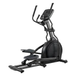

Elliptical Trainer
A low-impact cardio machine movement in which the feet trace a continuous oval on the foot plates while the moving handles push and pull, working the legs and upper body together.
Full body · Elliptical · Beginner

Muscles worked by the Elliptical Trainer
Primary
Secondary
Also called: glute, glutes, gluteus maximus, buttocks, butt, quad.
Equipment

EllipticalAlso called: elliptical trainer, cross trainer, x-trainer, glide trainer.
How to do the Elliptical Trainer
- Step onto the foot plates one at a time, holding the fixed centre post until you are steady, then take a moving handle in each hand.
- Start the pedals turning forward, keeping your whole foot down on the plate rather than lifting your heel.
- Push one handle away as the same-side foot travels forward, and pull the other back, so the arms and legs work in opposition.
- Stand tall with your hips over the pedals and your core braced instead of hanging back on the handles.
- Set the resistance and ramp so you can hold a smooth stride, and continue for the desired time or distance.
Form tips
- Drive the handles rather than letting the legs push them for you — the arm work is most of what makes the elliptical a full-body machine.
- Keep your heels down on the plates. Riding on the toes cramps the calves and cuts the glutes out of the stride.
- Pedalling backwards for part of the session shifts the emphasis toward the hamstrings and glutes and breaks up a long steady effort.
At a glance
| Body part | Full body |
|---|---|
| Category | Cardio |
| Force type | Push |
| Mechanic | Compound |
| Difficulty | Beginner |
| Equipment | Elliptical |
| Goals | Endurance |
| Tags | Full body, Conditioning, No axial load, Knee safe, Lower back safe |
| MET | 8.0 (metabolic equivalent, for calorie estimates) |
| Unilateral | No |
| Bodyweight | No |
| Dataset id | elliptical-trainer |
Elliptical Trainer in German & Spanish
| German | Crosstrainer |
|---|---|
| Spanish | Elíptica |
Descriptions, instructions and tips ship in all three languages in the JSON.
Related exercises
Exercise data (JSON)
The record below is exactly what exercises.json ships for this exercise — names, descriptions, instructions and tips in English, German and Spanish.
{
"id": "elliptical-trainer",
"name_en": "Elliptical Trainer",
"name_de": "Crosstrainer",
"name_es": "Elíptica",
"description_en": "A low-impact cardio machine movement in which the feet trace a continuous oval on the foot plates while the moving handles push and pull, working the legs and upper body together.",
"description_de": "Eine gelenkschonende Ausdauerübung am Gerät, bei der die Füße auf den Trittflächen eine durchgehende Ellipse beschreiben, während die beweglichen Griffe geschoben und gezogen werden — Beine und Oberkörper arbeiten zusammen.",
"description_es": "Un ejercicio de máquina cardiovascular de bajo impacto en el que los pies describen un óvalo continuo sobre las plataformas mientras los manillares móviles se empujan y se tiran, trabajando piernas y tren superior a la vez.",
"category": "cardio",
"force_type": "push",
"mechanic": "compound",
"difficulty": "beginner",
"equipment": "elliptical",
"body_part": "full_body",
"primary_muscles": [
"gluteus_maximus",
"quadriceps"
],
"secondary_muscles": [
"gastrocnemius",
"hamstrings",
"latissimus_dorsi",
"pectoralis_major",
"soleus",
"triceps_brachii"
],
"goals": [
"endurance"
],
"tags": [
"full_body",
"conditioning",
"no_axial_load",
"knee_safe",
"lower_back_safe"
],
"is_unilateral": false,
"is_bodyweight": false,
"instructions_en": [
"Step onto the foot plates one at a time, holding the fixed centre post until you are steady, then take a moving handle in each hand.",
"Start the pedals turning forward, keeping your whole foot down on the plate rather than lifting your heel.",
"Push one handle away as the same-side foot travels forward, and pull the other back, so the arms and legs work in opposition.",
"Stand tall with your hips over the pedals and your core braced instead of hanging back on the handles.",
"Set the resistance and ramp so you can hold a smooth stride, and continue for the desired time or distance."
],
"instructions_de": [
"Steig nacheinander auf die Trittflächen, halt dich dabei an der festen Mittelsäule fest, bis du stabil stehst, und nimm dann in jede Hand einen beweglichen Griff.",
"Bring die Pedale vorwärts in Bewegung und lass den ganzen Fuß auf der Trittfläche, statt die Ferse anzuheben.",
"Schieb einen Griff nach vorn, während der Fuß derselben Seite nach vorn wandert, und zieh den anderen zurück, sodass Arme und Beine gegengleich arbeiten.",
"Steh aufrecht mit der Hüfte über den Pedalen und festem Rumpf, statt dich an den Griffen nach hinten zu hängen.",
"Stell Widerstand und Rampe so ein, dass der Schritt rund bleibt, und mach die gewünschte Zeit oder Distanz weiter."
],
"instructions_es": [
"Súbete a las plataformas de una en una sujetándote al poste central fijo hasta estar estable, y luego toma un manillar móvil con cada mano.",
"Pon los pedales en marcha hacia delante manteniendo el pie entero apoyado en la plataforma, sin levantar el talón.",
"Empuja un manillar hacia delante mientras el pie de ese mismo lado avanza, y tira del otro hacia atrás, de modo que brazos y piernas trabajen en oposición.",
"Mantente erguido con la cadera sobre los pedales y el core activo, en lugar de dejarte caer hacia atrás sobre los manillares.",
"Ajusta la resistencia y la rampa para sostener una zancada fluida y continúa durante el tiempo o la distancia deseados."
],
"tips_en": [
"Drive the handles rather than letting the legs push them for you — the arm work is most of what makes the elliptical a full-body machine.",
"Keep your heels down on the plates. Riding on the toes cramps the calves and cuts the glutes out of the stride.",
"Pedalling backwards for part of the session shifts the emphasis toward the hamstrings and glutes and breaks up a long steady effort."
],
"tips_de": [
"Treib die Griffe aktiv an, statt sie von den Beinen mitschieben zu lassen — die Armarbeit ist das meiste von dem, was den Crosstrainer zum Ganzkörpergerät macht.",
"Lass die Fersen auf den Trittflächen. Auf den Zehen zu fahren verkrampft die Waden und nimmt das Gesäß aus dem Schritt.",
"Ein Teil der Einheit rückwärts getreten verlagert die Betonung Richtung Beinrückseite und Gesäß und lockert eine lange gleichmäßige Belastung auf."
],
"tips_es": [
"Mueve tú los manillares en lugar de dejar que las piernas te los empujen — el trabajo de brazos es lo que convierte a la elíptica en una máquina de cuerpo completo.",
"Mantén los talones apoyados en las plataformas. Ir de puntillas acalambra los gemelos y deja los glúteos fuera de la zancada.",
"Pedalear hacia atrás durante parte de la sesión desplaza el énfasis hacia isquiotibiales y glúteos y rompe la monotonía de un esfuerzo largo y constante."
],
"met": 8.0,
"images": {
"flat": {
"main": "images/flat/elliptical-trainer-main.webp"
}
}
}Fetch just this exercise
const { exercises } = await fetch(
"https://exercise-dataset.com/exercises.json"
).then(r => r.json());
const ex = exercises.find(e => e.id === "elliptical-trainer");Free for personal and commercial in-app use with attribution (“Exercise data by RepDB”) — see the license and ready-made attribution snippets. Redistributing the data as a dataset or API is not permitted.